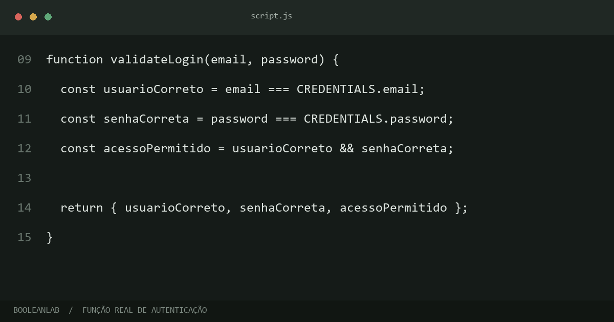

Primeira comparação
O e-mail está correto?
usuarioCorreto = trueTRUEFLUMINENSE · LÓGICA BOOLEANA
Uma experiência de login inspirada no Tricolor, criada para demonstrar como valores booleanos controlam decisões na programação.
INSPIRAÇÃO TRICOLOR · GRENÁ, VERDE E BRANCO
Universidade São Judas Tadeu · Unidade Santana
ACESSO TRICOLOR
✓ Ambiente local. Nenhum dado é enviado ou armazenado.
Autenticado como aluno
LOGIN CONCLUÍDO · RESULTADO: TRUE
O acesso foi liberado porque duas verificações retornaram verdadeiro ao mesmo tempo. Abaixo está o processo real executado pelo navegador.
Entender o processo ↓O RACIOCÍNIO
Primeira comparação
usuarioCorreto = trueTRUESegunda comparação
senhaCorreta = trueTRUEResultado final
true && trueACESSO LIBERADOO CÓDIGO REAL

script.js.O JavaScript compara o que foi digitado com os valores esperados usando ===. Cada comparação produz true ou false.
Em seguida, usuarioCorreto && senhaCorreta combina os dois resultados com o operador AND.
O if usa o resultado final. Se for verdadeiro, esta página é aberta; se for falso, o formulário exibe um aviso.
TODAS AS POSSIBILIDADES
| E-mail correto | Senha correta | Resultado com AND | Decisão |
|---|---|---|---|
| FALSE · 0 | FALSE · 0 | FALSE · 0 | Acesso negado |
| FALSE · 0 | TRUE · 1 | FALSE · 0 | Acesso negado |
| TRUE · 1 | FALSE · 0 | FALSE · 0 | Acesso negado |
| TRUE · 1 | TRUE · 1 | TRUE · 1 | Acesso liberado |